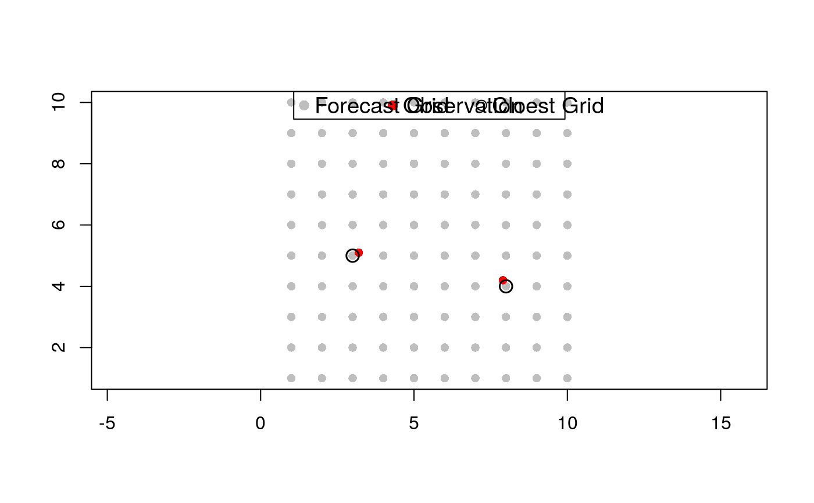
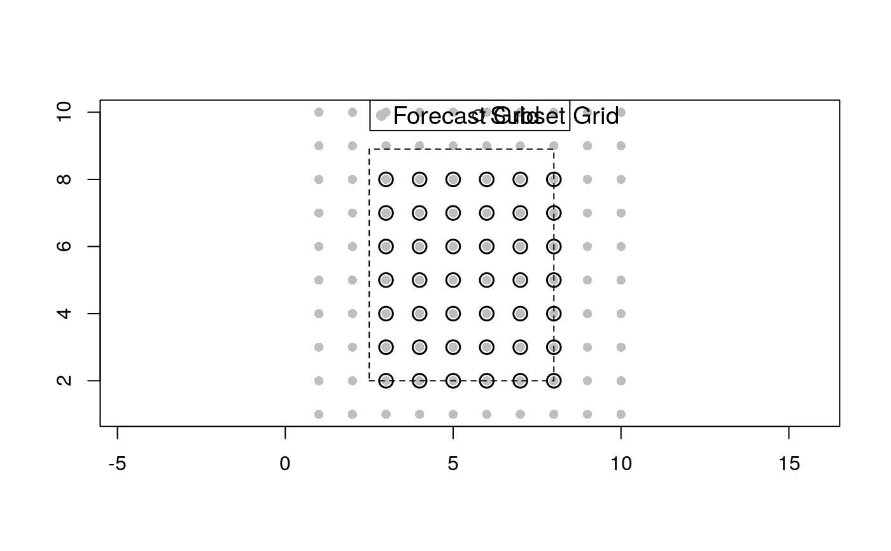

RAnEn::subsetCoordinates extracts the coordinates within an predefined extent or the coordinates that are closest to a set of target coordinates based on Eucleadian distances. This function can also write the corresponding IDs to the extracted coordinates into a file so that it can be used in other executables provided in the PAnEn packages.
subsetCoordinates( xs, ys, poi, file.output = NULL, arg.name = stop("Specify the argument name!") )
| xs | A vector with X coordinates. |
|---|---|
| ys | A vector with Y coordinates. |
| poi | Points of interest, or target points. It can be either a named
vector with |
| file.output | A file name to write the ID of subset stations. |
| arg.name | If you are going to use the output file with |
A data frame with ID and coordinates for subset stations. The column ID.C
should be used for C++ programs. The column ID.R should be used in R.
#################################################################### # Use Case 1 # #################################################################### # Define the forecast grid coordinates forecast.grids <- expand.grid(X = 1:10, Y = 1:10) # Define the observation coordinates obs.coords <- data.frame(X = c(3.2, 7.9), Y = c(5.1, 4.2)) # Find the closest forecast grid to each observation location subset.coords <- subsetCoordinates( forecast.grids$X, forecast.grids$Y, obs.coords) # Visualization plot(forecast.grids$X, forecast.grids$Y, pch = 16, cex = 1, col = 'grey', asp = 1, xlab = '', ylab = '')legend('top', legend = c('Forecast Grid', 'Observation', 'Cloest Grid'), col = c('grey', 'red', 'black'), pch = c(16, 16, 1), horiz = T, cex = 1.2)#################################################################### # Use Case 2 # #################################################################### # Define a region of interest extent <- c('left' = 2.5, 'right' = 8, 'top' = 8.9, 'bottom' = 2) # Subset the forecast grids within the extent subset.coords <- subsetCoordinates( forecast.grids$X, forecast.grids$Y, extent) # Visualization plot(forecast.grids$X, forecast.grids$Y, pch = 16, cex = 1, col = 'grey', asp = 1, xlab = '', ylab = '')rect(xleft = extent['left'], xright = extent['right'], ybottom = extent['bottom'], ytop = extent['top'], cex = 1, col = NA, lwd = 1, lty = 'dashed')legend('top', legend = c('Forecast Grid', 'Subset Grid'), col = c('grey', 'black'), pch = c(16, 1), horiz = T, cex = 1.2)